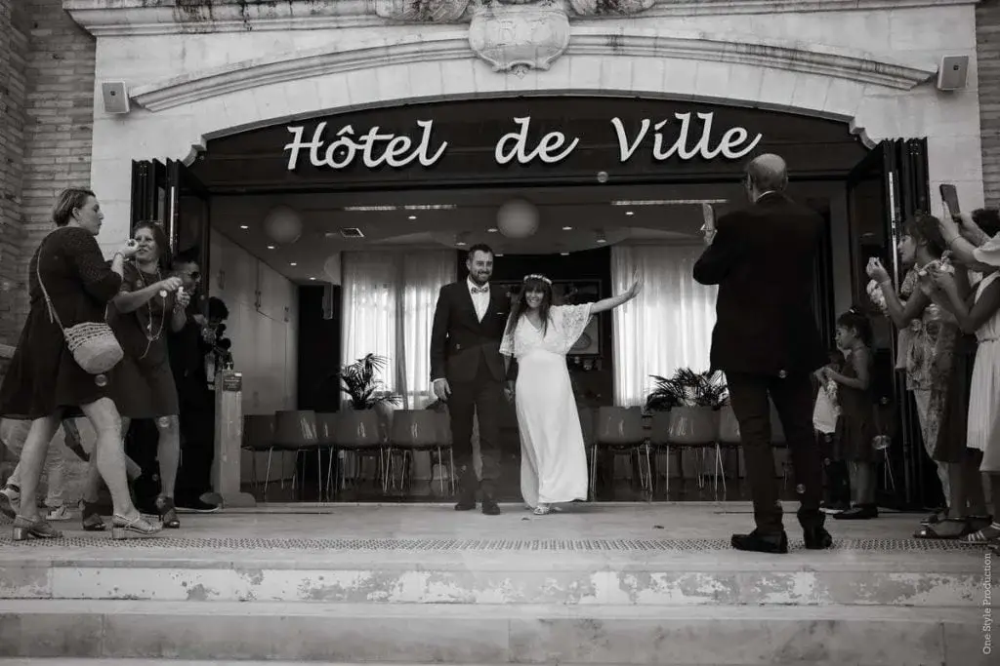
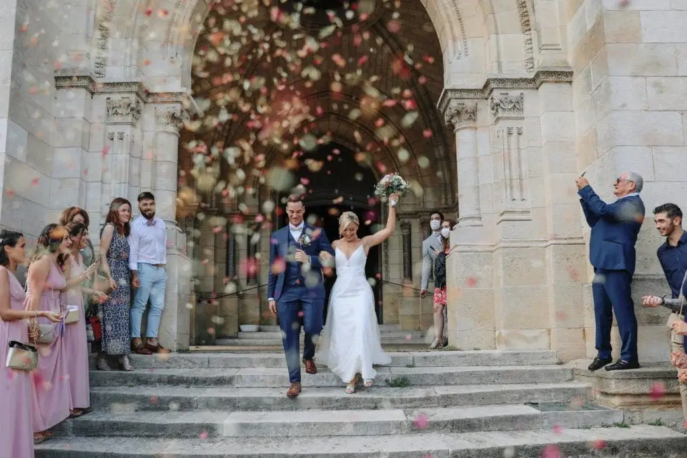
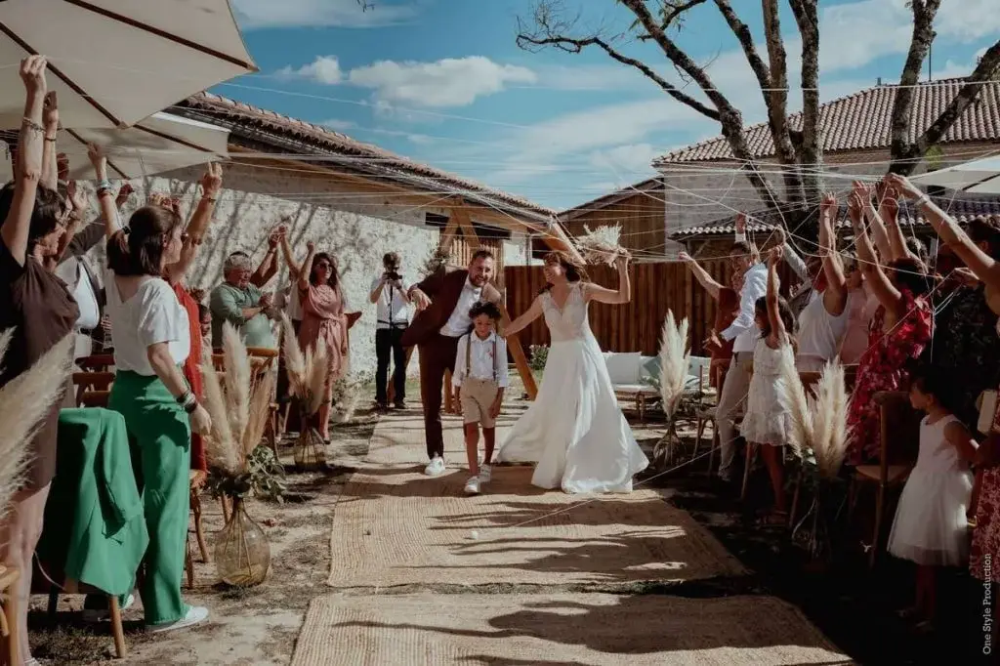
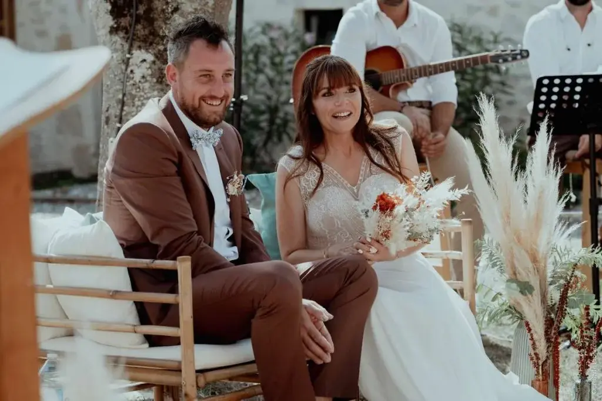

Vous allez bientôt vous marier ? Quelle bonne nouvelle ! Il vous reste plus qu’à choisir la ou les cérémonies qui rythmeront votre mariage. Pour vous aider à savoir en quoi elles consistent, découvrez-les dès maintenant afin de choisir celle qui sera la plus adaptée à vos envies.
La cérémonie civile
Le mariage civil qui se déroule à la mairie est la seule célébration officielle qui vous unie de manière formelle aux yeux de l’Etat français. Elle se réalise en présence du maire ou d’un officier d’Etat Civil de votre ville, les seules personnes habilitées à vous marier officiellement. Sans un passage à la mairie et la lecture des lois concernant le cadre du mariage, vous n’êtes pas légalement mariés.
Concernant son déroulement, les cérémonies à la mairie sont souvent courtes ce qui laisse peu de place pour le folklore. C’est donc pour cette raison que vous pourriez rajouter en plus de la cérémonie civile, une cérémonie religieuse ou laïque.

La cérémonie religieuse
Le mariage religieux est réservé aux couples croyants. A savoir qu’il n’a aucune valeur légale aux yeux de la loi, seulement de vos croyances. En fonction de votre religion, choisissez votre lieu de culte, et très souvent la cérémonie nécessite un temps de préparation religieuse. Vous serez amenés le Jour J à suivre des rituels et tout un protocole qui vous préparera à la vie de femme ou d’homme marié. Plus personnalisée et longue que la cérémonie civile, la cérémonie est toujours plus émouvante.

La cérémonie laïque

Bien que n’ayant aucune valeur légale, cette forme de cérémonie est adaptée si vous ne souhaitez pas faire de mariage religieux ou tout simplement si vous souhaitez vous dire “oui” de manière personnalisée et libre. Conçue autour du couple, l’objectif est de la rythmer de textes, d’interventions, de rituels que vous aurez choisi en amont. Elle peut être célébrée par n’importe qui dans votre entourage, alors profitez-en ! Ou sinon privilégiez l’option de l’officiante, elle sera là pour raconter votre histoire et donner de la tonalité à la cérémonie !

Que vous choisissiez cérémonie civile, religieuse et/ou laïque, n’hésitez pas à me contacter, je serais ravie de me charger de l’organisation.
Lovely Day Event c'est plusieurs types de prestations
L'organisation de mariage
Je vais intervenir sur toutes les étapes de vos préparatifs et vous guider dans vos choix. Je suis force de proposition pour que votre mariage ne ressemble qu’à vous.
Décoration de mariage
Créative et passionnée, je suis certifiée Wedding Designer et je conçois une ambiance scénographique qui correspond au thème de votre mariage.
Coordination le jour J
Je serai le chef d’orchestre pour gérer les différents prestataires, la mise en place de votre décoration et le déroulement de cette belle journée.